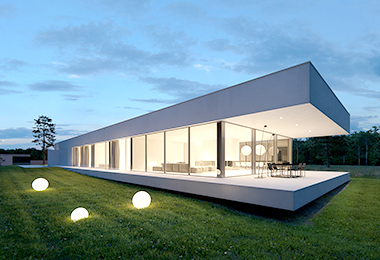

汉匠国际设计集团我们以客户需求和前沿发展理念为驱动力，使公司始终处于行业领先地位，将富有特色的方案与强大的技术相结合，不断增强综合解决能力。科学地统筹“咨询、设计、技术、管理”互联的高效服务模式，因地制宜地为不同城市建设项目提供具有创新性和经济性的解决方案。

深圳市汉沙杨景观规划设计有限公司
最早于2001年为地产界提供服务，2006年在深圳注册公司，2016年获得中国风景园林工程设计甲级资质。这个由建筑师、规划师、艺术设计、园林工程、环境工程、结构师、雕塑家、教授、专业顾问等人士组成的团队目前已达到100余人的规模，并在深圳市中心区的文化创意园拥有2100㎡的办公空间。十年来我们努力在城市设计、景观设计、公园规划、旅游规划领域综合发展。
深圳市盛朗艺术设计有限公司
公司集中了一批具有丰富经验的室内设计师，提供"项目咨询、专业设计、工程（设计）监理"等服务。盛朗的主设计师们， 有着丰富的实践经验和旺盛的创作动力，多年来一直以专注的敬业精神在 各项工程中不断探索着设计的终级目标。追寻"艺术加技术"的设计方式，推崇"设计解決需求"的服务理念。将业主、目标客群和设计师喜好有机融合，以专注的精神、严谨的态度、科学的方法来完成每一个项目。


中机十院国际工程有限公司深圳分公司
持有国家颁发的建筑工程设计、机械工程设计、工程监理、工程总承包、工程咨询、工程造价、环境污染防治等甲级资质证书及电力、轻工、市政工程设计和城市规划等乙级资质证书，具有承包境外工程和工程咨询、设计、监理及劳务输出等对外经营自主权，通过了质量、环境、职业健康安全“三标”管理体系认证。 公司实力雄厚，专业配置齐全。设有机械制造、轴承工艺、工业与民用建筑。